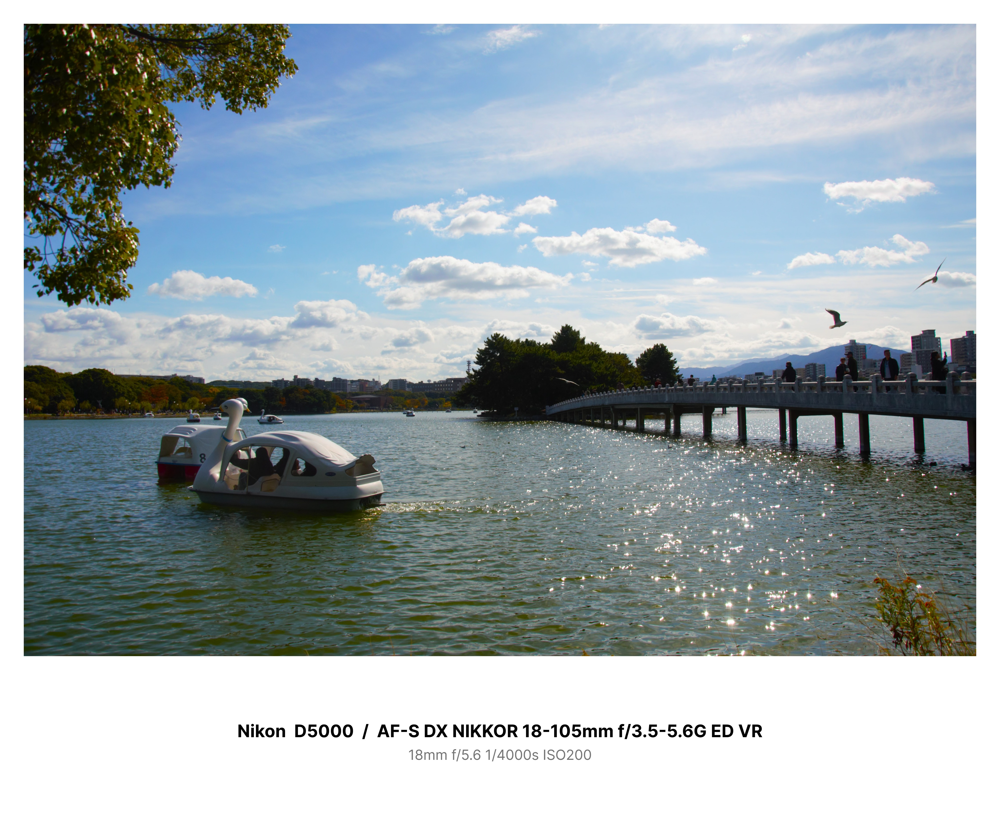
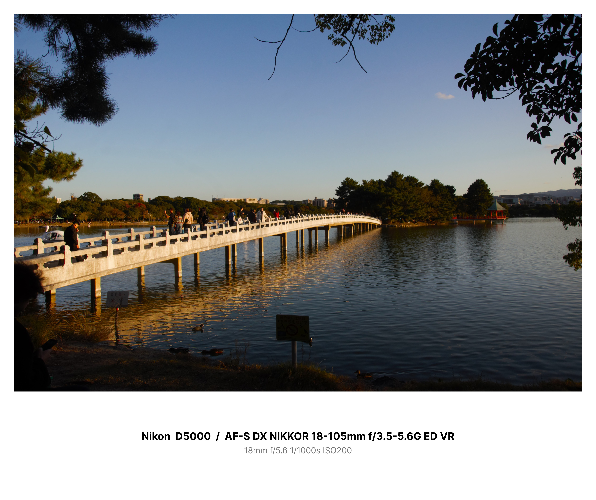

Hiroaki's HP
About Me
はじめまして。Tashiro Hiroakiです。
ここでは私が所有するカメラやレンズ、撮影した写真を紹介しています。
また、見たアニメなどの映像作品を紹介したりもします。
My Cameras
私が所有しているカメラは以下の4台です。
- Nikon D5000
- LUMIX FZ300
- ZENZA BRONICA ETRS
- Nikon COOLPIX S3400
ただ電動ズームなので、普通のレンズと比べたらズームの速度が遅いのが難点ですね。
まあ4K動画撮影ができるし、それなりに使えるので満足しています。
また、レンズもいくつか所有しています。
- AF-S DX NIKKOR 18-55mm f/3.5-5.6G VR
- AF-S DX NIKKOR 18-105mm f/3.5-5.6G ED VR
- AF-S DX VR Zoom-Nikkor 55-200mm f/4-5.6G IF-ED
- AF-S VR Zoom-Nikkor 70-300mm f/4.5-5.6G IF-ED
- ゼンザノンE 75mm F2.8
My Photos
私が撮影した写真をいくつか紹介しします。

